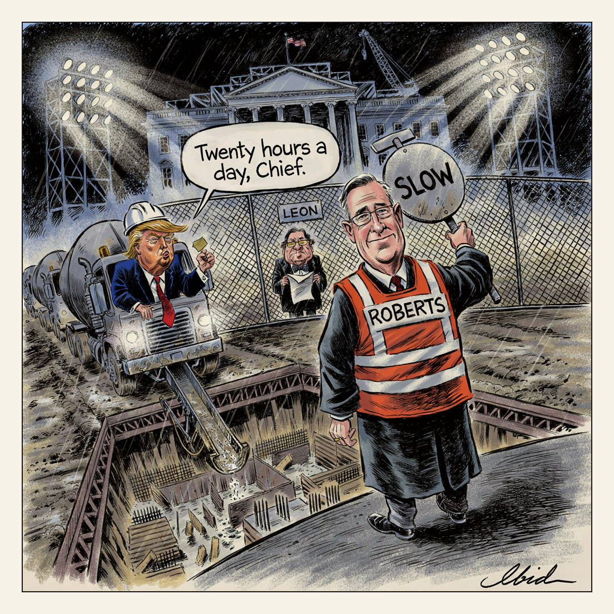

For now.
Flagman

Chief Justice John Roberts issued a temporary order Friday letting Trump's $400m White House ballroom project continue while the Supreme Court weighs an emergency appeal. The order pauses injunctions from District Judge Richard Leon, who wrote that the president is "not the owner" of the White House but carved out an exception for work ensuring its safety and security. The administration told the court that 65 percent of the work is complete and that crews are working 20 hours a day, seven days a week; the National Trust for Historic Preservation accused the White House of trying to "outrun the courts."